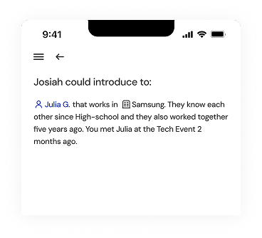
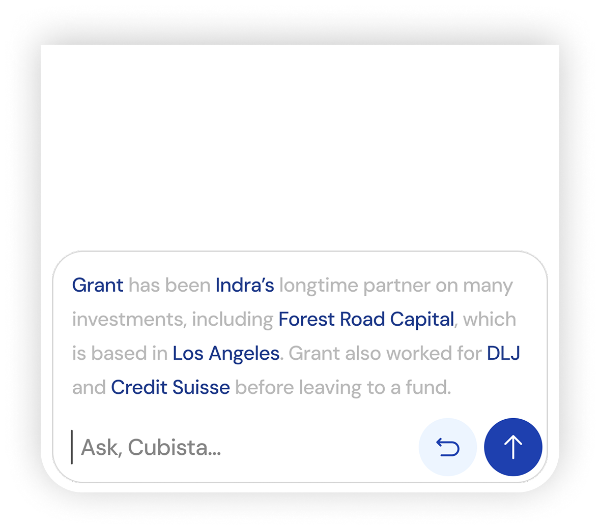
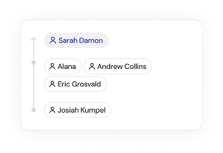
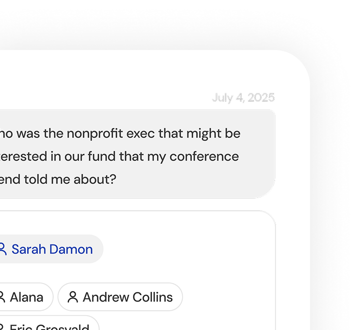

01 — Connect
Moving, Not Labels
"Met someone in alternatives" finds people you never tagged that way. Search by concept, not keywords.

Why Cubista finds relationship other systems can't.
Traditional databases work like filing cabinets. You can label records, save fields, and retrieve exactly what was entered. That works well for static facts.
Human memory works differently. It connects signals, context, and prior conversations. It surfaces useful relationships without requiring rigid categories first.
Cubista works like your brain.
Instead of forcing relationship knowledge into flat tables, Cubista builds a connected layer of context.
That means answers come from paths in your network, not only from isolated entries.
The result: unlinked memories, latent trust, and relationship paths traditional systems would never surface.

01 — Connect
"Met someone in alternatives" finds people you never tagged that way. Search by concept, not keywords.
02 — Capture
Tell Cubista what you know-voice or text. It extracts people, companies, and context automatically.

03 — Discover
"How do I reach [target]?" Cubista traces through your entire network to find the connection.
Voice or text input
Extracts meaning, maps connections
Unified, searchable, alive
Wealth Advisor
Surface client connections before meetings.
Law Partner
Find who knows opposing counsel.
VC Partner
Map paths to founders through your LP network.
Banker
Warm introductions to target decision-makers.
